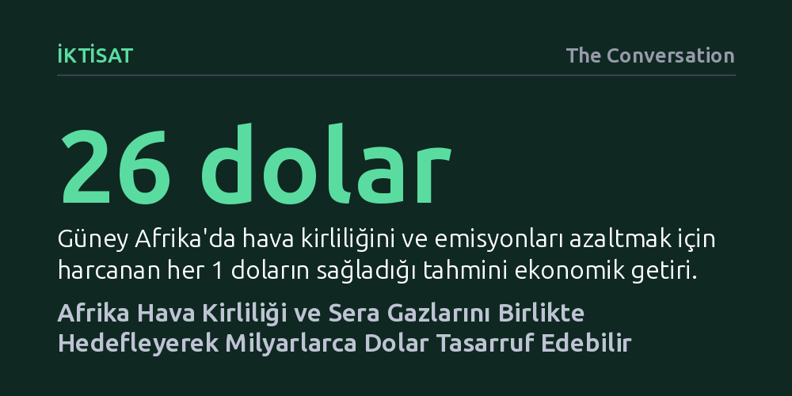

IKTISAT · The Conversation · 2026-10-19
Afrika'da hava kirliliği ve sera gazı salımlarını birlikte azaltmaya yönelik tedbirler, harcanan her bir dolara karşılık 26 dolarlık ekonomik getiri sağlıyor. Sağlık harcamalarındaki düşüş ve artan iş gücü verimliliği sayesinde bu ortak hamle, milyarlarca dolarlık net tasarruf vadediyor.
Hava kirliliği ile iklim krizini ayrı kompartımanlarda ele almanın maliyetli bir hata olduğunu, iki sorunu eşzamanlı çözmenin ekonomik olarak kendi masrafını katbekat karşıladığını gösteriyor.

Sahra Altı Afrika'da her yıl yaklaşık bir milyon insan, sadece soluduğu kirli hava nedeniyle vaktinden önce yaşamını yitiriyor. 2025 Küresel Hava Durumu raporunun ortaya koyduğu bu çarpıcı bilanço, hava kirliliğini kıta genelinde yetersiz beslenmenin hemen ardından en ölümcül ikinci halk sağlığı riski haline getirmiş durumda. Üstelik bu kriz toplumun geneline eşit dağılmıyor; en ağır faturayı yaşlılar ve özellikle savunmasız çocuklar ödüyor.
Küresel ölçekte hava kirliliğine bağlı ölümlerin yalnızca yüzde 12'si Sahra Altı Afrika'da gerçekleşse de, kirlilik kaynaklı çocuk ölümlerinin yarıdan fazlası tek başına bu kıtada yoğunlaşıyor. Bölgede kalp krizleri ve yüksek tansiyon vakalarının tırmanışa geçmesinde de hava kalitesindeki bozulmanın payı büyük. Evlerde yemek pişirmek ve ısınmak için odun, kömür gibi ilkel yakıtların yakılması, yetersiz atık yönetimi, kontrolsüz tarımsal anız yangınları ve fosil yakıta dayalı ulaşım, kıtanın gökyüzünü zehirlerken aynı zamanda gezegeni ısıtan sera gazlarını da doğrudan körüklüyor.
Çevre bilimciler Chris Malley, Kevin Hicks ve Caroline Sawe tarafından yürütülen yeni modellemeler, hava kirliliği ile iklim değişikliğinin aynı madalyonun iki yüzü olduğunu kanıtlıyor. Araştırmacılar; enerji sistemleri, sanayi, ulaşım, tarım ve evsel yakıt kullanımını kapsayan 25 kanıtlanmış çözümü içeren bir eylem paketinin ekonomik bilançosunu çıkardı. Sonuçlar, özellikle Güney Afrika bölgesinde kirliliği önlemek için harcanacak her 1 doların, topluma ve devlete tam 26 dolarlık bir ekonomik fayda olarak geri döneceğini gösteriyor.
Bu getiri oranının büyüklüğünü kavramak için küresel sağlık yatırımlarının altın standardı kabul edilen çocukluk çağı aşılarıyla kıyaslamak yeterli. Gelişmekte olan ülkelerde yapılan çocuk aşıları harcanan her 1 dolara karşılık yaklaşık 16 dolarlık bir ekonomik getiri sağlarken, temiz hava yatırımları bu seviyeyi dahi açık farkla geride bırakıyor. Güney Afrika genelinde önerilen 25 müdahalenin tamamını 2035 yılına kadar hayata geçirmenin toplam maliyeti yaklaşık 11 milyar doları bulsa da, elde edilecek ekonomik kazanımlar bu tutarı katbekat aşıyor.
Söz konusu finansal getirinin kaynağı ise doğrudan somut tasarruflara dayanıyor. Hava kirliliğinin azalması; astım, solunum yolu enfeksiyonları ve kardiyovasküler rahatsızlıklar nedeniyle hastaneye yatışları ciddi oranda düşürüyor. Çalışanların hastalık yüzünden iş gücü kaybı yaşamasının önüne geçiliyor, üretim kapasitesi artıyor ve çocukların sağlık sorunları sebebiyle okuldan geri kalması engelleniyor. Kısacası kirlilikle mücadele, bir maliyet kalemi olmaktan çıkıp kamu bütçesini doğrudan rahatlatan yüksek getirili bir yatırıma dönüşüyor.
Rapor, teorik saptamaların ötesine geçerek Afrika ülkelerinin hemen uygulayabileceği 37 öncelikli eylem alanını tek tek tanımlıyor. Bunların en başında, hanelerin yemek pişirmede odun ve mangal kömürü yerine sıvılaştırılmış petrol gazı (LPG) gibi daha temiz yakıtlara geçişi yer alıyor. Bunun yanı sıra yenilenebilir enerji kapasitesinin artırılması, yük taşımacılığının otoyollardan demiryollarına kaydırılması, fabrikalarda enerji verimliliği standartlarının yükseltilmesi ve kentsel toplu taşıma ağlarının güçlendirilmesi hayati adımlar arasında sıralanıyor. Tarımda anız yakımının sonlandırılması ve çöplükler ile arıtma tesislerinden çıkan metan gazının hapsedilmesi de hem zehirli dumanı hem de küresel ısınmayı eşzamanlı olarak kesiyor.
Bu tür müdahalelerin sahada nasıl sonuç verdiğini gösteren en somut başarı hikayesi Gana'da yaşandı. Gana'da 2000 ile 2021 yılları arasında mutfağında odun ve kömür kullanan hanelerin oranı yüzde 75'ten yüzde 54'e gerilerken, temiz alternatif olan LPG kullanımı iki katına çıktı. Bu temiz dönüşüm sayesinde ülkede ev içi hava kirliliğine bağlı ölüm oranında yaklaşık yüzde 30'luk belirgin bir düşüş kaydedildi.
Nijerya ve Fildişi Sahili gibi ülkelerin de benzer sektör odaklı iklim planlarını devreye sokması, hava kalitesi ile iklim hedeflerinin birlikte ele alındığında binlerce erken ölümü daha en baştan önleyebileceğini teyit ediyor. Üstelik toplu taşımaya ve temiz enerjiye yönelmek, kentlerdeki boğucu dumanı dağıtırken sıradan yurttaşların işe, okula ve sağlık kuruluşlarına ulaşım maliyetlerini de kalıcı biçimde düşürüyor.
Böylesine devasa bir ekonomik getiri ve kurtarılmayı bekleyen milyonlarca hayat ortadayken, uluslararası fon akışının neden yetersiz kaldığı sorusu sistemik bir çarpıklığı ortaya koyuyor. Günümüzde küresel kalkınma finansmanının yalnızca yüzde 1 gibi sembolik bir kısmı hava kirliliğiyle mücadeleye ayrılıyor ve bu son derece kısıtlı kaynağın da yalnızca çok ufak bir kırıntısı Afrika kıtasına ulaşıyor.
Tıkanıklığın ana kaynağı, çok taraflı kalkınma bankalarının eski alışkanlıklarında ve katı borç verme kurallarında yatıyor. Finans kuruluşları hava kalitesi yönetimi ile iklim krizini genellikle birbirinden tamamen kopuk iki ayrı uzmanlık alanı olarak görüyor. Çoğu kalkınma bankasında hava kirliliği için ayrılmış bağımsız bir fonlama başlığı dahi bulunmuyor; iki sorunu eşzamanlı çözen yenilikçi projeler ise farklı departmanların bürokratik labirentlerinde sahipsiz kalıyor.
Araştırma, kalkınma bankalarının sermayeyi bürokratik olarak fonlaması en zahmetsiz projelere değil, maliyet-fayda oranının en yüksek olduğu ve ucuz finansmanın en kıt bulunduğu bölgelere yönlendirmesi gerektiğini vurguluyor. Çok taraflı iklim fonlarının, hava kirliliğini ve sera gazlarını birlikte azaltan yatırımların katlamalı getirisini resmen tanıması gerekiyor. İki krize tek bir koordineli planla müdahale etmek, Afrika için sadece çevresel bir tercih değil, ertelenemez bir ekonomik kalkınma hamlesidir.